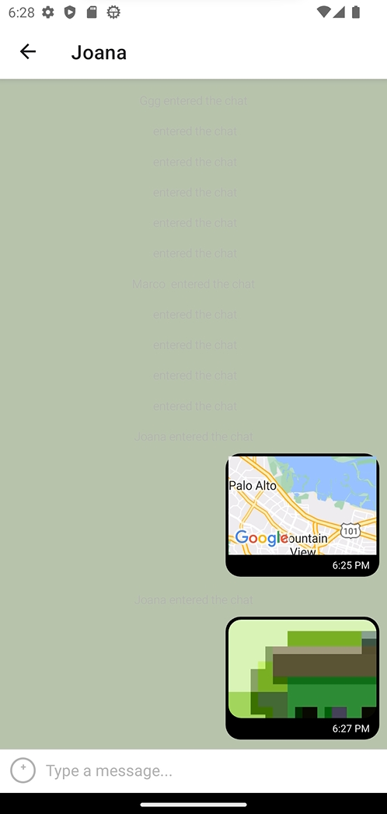
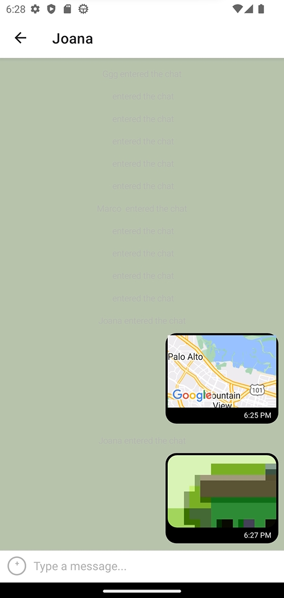

Summary
Purpose and Context
Chat App is a personal project I built during the Full-Stack Immersion course at CareerFoundry to add to my portfolio and demonstrate my knowledge of JavaScript mobile development/React Native development.
Objective
My objective was to built a native chat app for mobile devices using React Native.
Tools, Skills, Methodologies
React, React Native, Expo (to develop the app), Google Firestore Database (to store the chat messages), Google Firebase (authentication), Firebase Cloud Storage (to store images), Gifted Chat library (to create the chat interface and functionality)
Duration
2 weeks
Credits
Joana Martins
Challenge
More and more people use their mobile devices to complete daily tasks, such as communicating with people, managing tasks, scheduling events, shopping, and more. Chat apps (for mobile devices) are within the most downloaded and used apps in the world. So in this project my goal was to built a high-quality native chat app for mobile devices using React Native (and other technologies). This allowed me to learn how to build a chat app and apply my React Native skills.
React Native is a JavaScript framework for building Android and iOS apps that only requires one codebase. React Native apps are powerful and performant, as well as cheaper and easier to build that pure native apps.
Process
To build the the chat app I followed these steps:
- Setting up Expo and the development environment
- Creating the chat interface
- Choosing the Real-Time Application method and implementing a database solution
- Storing data on the client-side
- Implementing additional communication features
Setting up Expo and the development environment
Facebook recommends using Expo for developing and testing React Native Apps. So I started by setting up Expo and my development environment, which included the following tools:
- My terminal and Node
- Expo and Expo CLI (the platform I used to build the app)
- Expo Go App (to test the app on my mobile device)
- Expo account
To test, preview and record interactions as I was developing the app I used a virtual device. Since one of the best virtual device tools comes from Android Studio the one I set up was Android Emulator.
After setting up the development environment I created the first two screens (start screen and chat screen). I also implemented the design and layout for the first screen, and set up the navigation between the two screens.
Creating the chat interface
The next step was creating the chat interface. To create the chat interface I used Gifted Chat which is a React library for developing chat apps. I decided to use this library because Gifted Chat allowed me to create the exact type of app that I wanted, and the Chat App didn’t contain any unique requirements that this library couldn’t fulfill.
So I implemented the UI for my main chat screen, including a text input field to write messages, speech bubbles for sent and received messages, and a status message informing users that they’ve entered the chat.
Choosing the Real-Time Applications method and data storage
Without some method of storage my users wouldn’t be able to read and send messages in real-time. The next step was choosing a Real-Time Application (RTA) method and implementing a database solution.
Real-time data is information stored in a database that is delivered to a user without delay. Real-time data is essencial for a chat app, as users need to see any new messages they’ve sent or received. After comparing my project requirements with the opportunities offered by each RTA method I was left with two options: long polling and WebSockets. To decide which one was the best I had to consider a few other factors, namely the database to store data and the ability to implement real-time code.
The database I used to store data is a real-time database that comes with Google Firebase: Cloud Firestore. Firestore also provides a means to connect to that database in real-time with a handful of easy-to-use functions without the need to code an implementation of real-time enabling technologies all by yourself. Since Firestore uses WebSocktets to achieve this functionality, that was the RTA method I chose.
Storing data on the client side

Another essential feature for a chat app is to make the app available offline (and allow users to read their messages while offline). Storage on the client-side ensures that even when your users are offline, they’ll still be able to reread their sent and received messages. It also improves the apps performance by limiting the number of requests to the server. So the next step was implementing client-side data storage.
I implemented client-side data storage using a React Native package for local storage: AsyncStorage. This package is recommended by the Expo and React Native teams.
Knowing if a user is online or offline is also essential to help determine the actions to perform. To determine whether a user is online or not, I used NetInfo, which is also recommended by the Expo team.
Implementing additional communication features
When building native mobile apps, you can use some special features provided by the platform’s environment, like the ability to access a device’s location, microphone, and camera.
In the final step of the project I was focused on implementing additional communication features to the Chat App. I gave the users the ability to send pictures (chosen from their device’s image library or taken with the camera) and share their current location.
Without a storage place for imagens chat’s participants wouldn’t be able to see the images that were send via the Chat App. The solution was storing the images on a remote server (this allows all devices to connect to the server to fetch the sent images). I used Cloud Storage for Firebase to store and send images in the Chat App, because I was already using Google Firestore to store chat messages.
Outcome and future steps
The final product was a native mobile chat app to demonstrate my React Native programming skills. It’s a simple app with a chat interface and options to share images and the location.
I really enjoyed this project because it was a great example of how frameworks and libraries can make a developer’s life easier. I was able to quickly build a chat app using React Native and Gifted Chat.
One of the challenges I faced during the project was testing the functionality using the Android Emulator. The process was very slow. I also ran into several issues when I was testing the communication features (I couldn’t take pictures with the Android Emulator).
In the future it would be great to implement additional features, such as editing or deleting messages.
 
